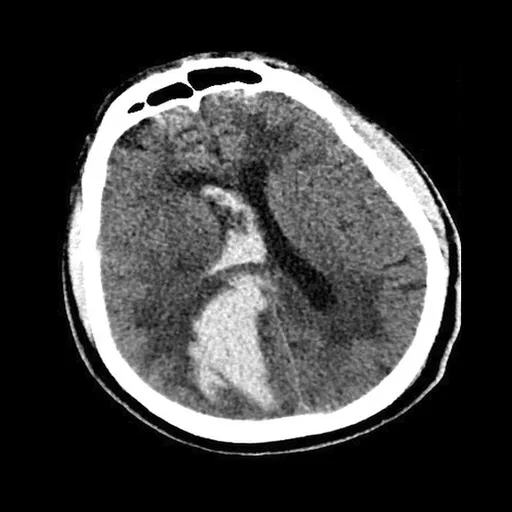
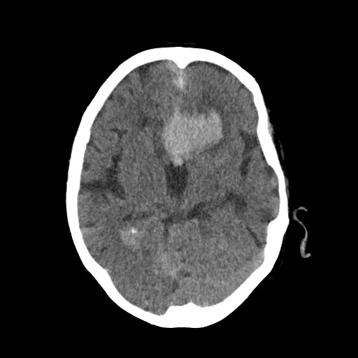

Intracranial Hemorrhage Diagnosis & Emergency Triage AI
Technical Manager and Computer Vision Engineer
Role and Mission Overview
Intracranial hemorrhages (ICH) are acute medical emergencies where fast and accurate diagnosis is critical for patient survival. At the APAC Research Group, I directed clinical deep learning pipelines, developing volumetric triage models, 3D hemorrhage quantification, and multi-specialist annotation tools across non-contrast head CT scans.
Automated AI Hemorrhage Triage & Segmentation
The Clinical Challenge
In emergency acute triage, radiologists must rapidly review dozens of 3D CT slices per patient. Bleeding lesions occupy less than 2% of total scan volumes, creating severe class imbalance. Isolated 2D slice classification loses inter-slice anatomical continuity, risking missed hematoma margins.
Supervised Deep Learning & Foundation Vision Pipeline
We engineered an end-to-end clinical diagnostic framework combining supervised deep learning models, foundation vision encoders, and specialized medical imaging pipelines:
- Tailored Pre-Processing & Post-Processing: Implemented specialized Hounsfield Unit windowing, contrast normalization, skull-stripping, and artifact removal, combined with conditional probabilistic post-processing to eliminate false detections.
- Multi-Scale Classification & Segmentation: Deployed high-capacity deep CNNs and vision foundation backbones for joint slice-level defect classification and pixel-level lesion segmentation.
- Spatio-Temporal Sequence Modeling (CT-as-Video): Incorporated sequential slice modeling imitating clinician scroll dynamics to aggregate inter-slice contextual continuity across the axial volume.
Multi-Slice Interactive Lesion Segmentation Showcase
Drag the sliders below to compare raw non-contrast CT slices against deep learning lesion segmentation masks across different anatomical depths:

AI Mask Raw CT
AI Mask Raw CTRepresentation Learning & Explainable AI (XAI)
Foundation Representation Learning
Manually segmenting volumetric head CT scans across thousands of patients is labor-intensive, error-prone, and a major bottleneck in clinical AI deployment. To overcome this limitation, we explored Representation Learning and Generative AI through self-supervised pre-training and generative modeling. By pre-training vision encoders directly on large cohorts of unlabeled 3D head CT volumes, our models capture intrinsic cranial symmetry, healthy parenchymal tissue distributions, and inter-slice spatial continuity. These learned representations act as strong anatomical priors, allowing downstream classifiers and anomaly detectors to isolate acute hemorrhages with minimal supervision.
Engaging Specialists via Explainable AI & 3D Volumetrics
In emergency neurological care, black-box predictions are insufficient to earn clinician trust. We developed Explainable AI (XAI) pipelines that derive weakly-supervised spatial localization maps directly from scan-level predictions, visually highlighting the exact pathological regions driving each triage alert.
As demonstrated in the 3D reconstruction below, these spatial representations are mapped into a volumetric cranial model. This 3D visualization provides medical specialists and neurosurgeons with an intuitive, interactive understanding of the model's decision rationale—displaying exact lesion boundaries, volumetric hemorrhage quantification (mL), and potential midline shift in true anatomical coordinates.
{kind=link}
Hemorrica 300+ Patient Benchmark Dataset
Systematic Data Gathering & Statistical Profiling
To address the scarcity of high-quality, standardized clinical benchmarks for intracranial hemorrhage (ICH), we formulated a systematic multi-stage protocol for data gathering, DICOM normalization, and clinical curation from emergency department non-contrast head CT scans across 300+ patients with confirmed intracranial hemorrhage.
We conducted thorough statistical analysis across the entire cohort—evaluating demographic distributions, lesion volume dispersion, hematoma subtype co-occurrences (IPH, IVH, SAH, SDH, EDH), and measuring inter-observer variability to ensure a balanced, robust distribution for clinical AI modeling.
Multi-Task Ground Truth & Expert Consensus
In close collaboration with 3 senior neuroradiology specialists, we established verified consensus ground-truth annotations across four essential clinical AI tasks:
{kind=link}
{kind=link}
{kind=link}
{kind=link}
Open-Source Scalable Medical Annotation Platform
Motivation & Engineering Contribution
Medical AI development frequently encounters bottlenecks due to the absence of lightweight, web-native annotation tools capable of seamlessly handling raw clinical DICOM/NIfTI volumes alongside conventional formats. To empower research teams and clinical specialists, we built and open-sourced a high-performance, browser-native medical annotation platform engineered for secure multi-expert collaboration and rapid deep learning integration.
Key Architecture & Scalability Highlights
- Broad Format Compatibility: Seamlessly ingests 3D DICOM series, volumetric NIfTI (`.nii`/`.nii.gz`), raw NumPy arrays (`.npy`/`.npz`), and standard 2D image formats (PNG, JPEG, TIFF).
- Deep Learning Pipeline Readiness: Instant one-click export of structured labels into COCO instance JSON, YOLO bounding boxes, VOC XML, and binary/multi-class semantic segmentation masks.
- Specialized Radiography Tooling: Real-time 16-bit Hounsfield Unit (HU) window leveling presets (Brain, Subdural, Bone, Stroke windows), multi-slice brush interpolation, and polygon contouring.
- Secure & Scalable Architecture: Client-side DICOM de-identification/anonymization, multi-specialist consensus review, and lightweight cloud-ready deployment designed for large-scale multi-center clinical cohorts.